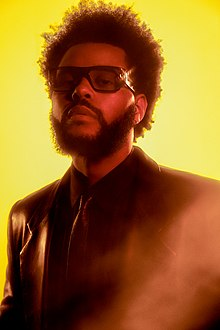

Spotify's annual feature rounds up its listeners' year in music and podcasts,
The top artists of 2022
1. Taylor Swift
2. The Weeknd

Abel Makkonen Tesfaye (born February 16, 1990),
3. Bad Bunny
Benito Antonio Martínez Ocasio(born March 10, 1994),
4. BTS
BTS (Korean: 방탄소년단; RR: Bangtan Sonyeondan; lit.
5. Lana Del Ray
Elizabeth Woolridge Grant (born June 21, 1985),


____________________________________________________________________________
individually and around the world. The music streaming app has delighted
fans with individualised breakdowns for a few years now with 2022 bringing
an overview of your top genres, songs, and artists as well as
a unique magazine and listening personality.There’s no single way to
define what a year 2022 has been.
Coming back after a few years of uncertainty has led each of us to create
a “new normal” in our relationships to culture—and to each other. This year,
Spotify listeners especially took the chance to redefine how they find joy. And now,
it’s time to unveil what the world collectively delighted in and obsessed over with
Spotify’s 2022 Wrapped.
Taylor Alison Swift (born December 13, 1989)
is an American singer-songwriter. Her genre-
spanning discography, artistic reinventions
and songwriting have received critical praise
and wide media coverage.
known professionally as the Weekend, is a
Canadian singer, songwriter and actor. Known for
his sonic versatility and dark lyricism, his
music explores escapism, romance, and melancho-
lia, and is often inspired by personal experiences.
known professionally as Bad Bunny, is a Puerto Rican
rapper and singer. His musical style is primarily.
Bulletproof Boy Scouts), also known as the Bangtan
Boys, is a South Korean boy band formed in 2010.
The band consists of Jin, Suga, J-Hope, RM, Jimin,
V, and Jungkook, who co-write and co-produce the
majority of their material.

known professionally as Lana Del Rey, is an
American singer-songwriter. Her music is
noted for its cinematic quality.